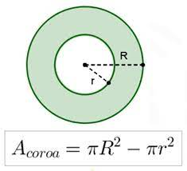
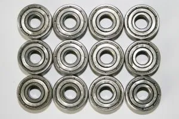

COROA DO CÍRCULO
Uma coroa de círculo, também conhecida como anel, é uma figura geométrica que pode ser descrita da seguinte maneira:
Definição:
- A coroa de círculo é uma figura que se assemelha a um anel ou uma rosquinha, consistindo em dois círculos concêntricos (círculos com o mesmo centro) com raios diferentes. Ela é formada pela região entre os dois círculos.

Elementos Principais:
- A coroa de círculo tem dois raios, um raio externo (maior) e um raio interno (menor).
- O centro da coroa de círculo é o mesmo centro de ambos os círculos concêntricos.
Propriedades Básicas:
- O raio externo define a distância do centro da coroa de círculo até a borda externa, enquanto o raio interno define a distância do centro à borda interna.
- A largura da coroa de círculo é a diferença entre o raio externo e o raio interno.
Área da Coroa de Círculo:
- Para calcular a área da coroa de círculo, você pode subtrair a área do círculo interno da área do círculo externo. A fórmula para a área da coroa de círculo é A = π(R² - r²), onde A é a área, R é o raio externo e r é o raio interno.

Perímetro da Coroa de Círculo:
- O perímetro da coroa de círculo é a soma das circunferências dos dois círculos, ou seja, 2πR + 2πr.
Usos Práticos:
- Coroas de círculo são frequentemente usadas em design, joalheria, arquitetura e engenharia para criar formas anelares e objetos com anéis concêntricos. Por exemplo, anéis, engrenagens, rodas de engrenagens e projetos decorativos podem envolver coroas de círculo.
